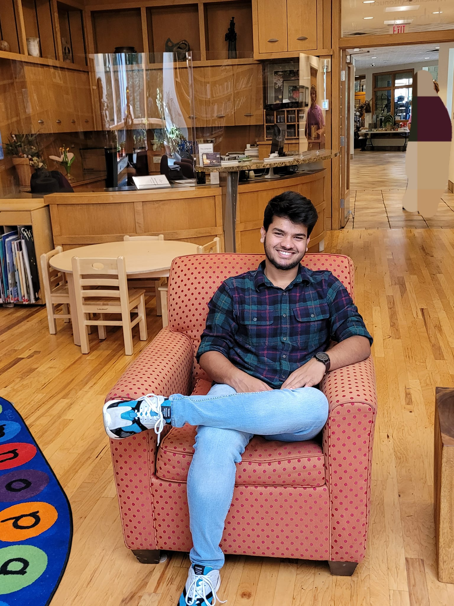
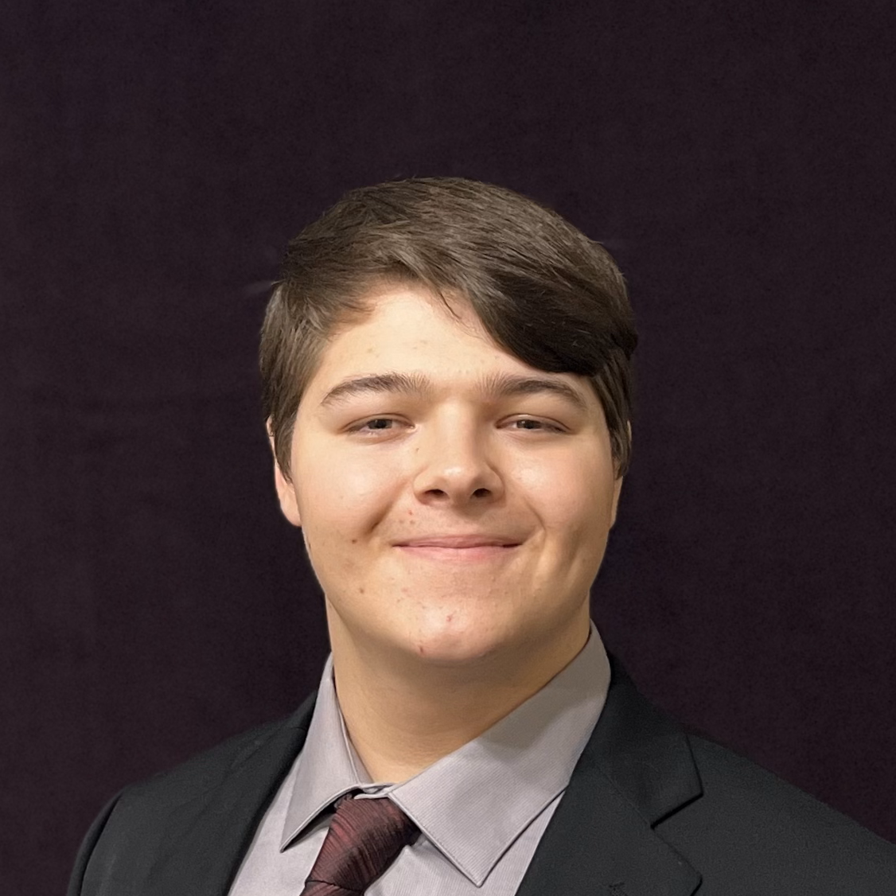
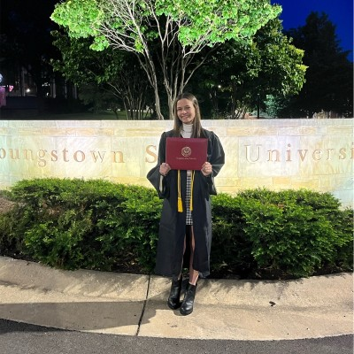

A dedicated group of students and community members who combined technology, research, and creativity to build a unique family-friendly exploration experience in Downtown Youngstown.

Emran Hossain
Project Lead & Developer
Developed the web application architecture and interactive features, including authentication and location-based stamp collection. Passionate about cybersecurity and clean code.
“Turning ideas into meaningful community tech solutions.”
Ashish Bhattarai
Innovation & AI
Drives innovation by integrating AI technologies to enhance the passport app’s interactivity and smart features.
“Leveraging AI to create engaging community experiences.”
Prerana Pandey
Marketing Strategist
Crafts compelling narratives and content that drive app adoption and visibility across various platforms.
“Creativity meets strategy to make every click count.”

Sebashton Aughinbaugh
Systems Architect
Designs scalable infrastructure and tech systems to support long-term functionality of the app and data security.
“Engineering systems today to power community experiences tomorrow.”
Daniel Bancroft
Operations Manager
Oversees cross-functional teams and project execution at EAG, with a focus on revitalizing communities in the Mahoning Valley.
“Community revitalization isn’t just a goal — it’s a shared journey.”
Gianna Marinucci
Supervisor
Provides guidance and oversight to interns, ensuring high-impact work and strategic alignment with project goals.
“Empowering teams to lead with purpose and impact.”
Venus Cataldo
Supervisor
Leads collaborative outreach and mentors interns on public engagement and local partnerships.
“Mentoring change-makers to build stronger communities.”
Kennedy Kish
Marketing Manager
Develops promotional strategies and manages digital campaigns to increase community engagement with the app.
“Marketing with heart to reach every corner of our city.”
Molly O’Brien
Support Intern
Assists with research, testing, and documentation for site content and app features.
“Behind the scenes, making every feature shine.”

Malena Whitfield
Support Intern
Supports day-to-day operations and helps manage outreach with local businesses and attractions.
“Helping the team tell their story with clarity and impact.”